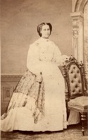

Beaubien-Perrault-Benington - Person Sheet
Beaubien-Perrault-Benington - Person Sheet

Death27 Feb 1936, Outremont, Québec75
Burial2 Mar 1936, Notre-Dame-des-Neiges, Montréal, Quebec
FatherSir Andrew Stuart (1812-1891)
MotherElmire Charlotte Aubert De Gaspé (1817-1899)
Spouses
Birth27 Jul 1837, Montréal, Québec236
Death19 Jul 1915, Outremont, Québec
Burial21 Jul 1915, Notre-Dame-des-Neiges, Montréal, Quebec75
Occupationagronome, ministre, homme d’affaires
FatherDr. Pierre Beaubien (1796-1881)
MotherM. Justine Casgrain (1804-1882)
ChildrenJoseph (1865-1949)
Marie Suzanne (1866-1945)
Louis De Gaspé (1867-1939)
Charles Philippe (1870-1949)
Pierre de Bellefeuille (1872-1875)
M. Elmire Justine Isabeau (Mimi) (1875-1947)
Jeanne Blanche (1877-1878)
Henri Gustave Eugène (1878-1883)
Jacques De Gaspé (1881-1969)
M. Lauretta Stuart (1883-1885)
M Berthe Yvonne (1886-1953)
Marguerite Maud (1890-1969)
Notes for Suzanne Lauretta Stuart
86 [bap] P: PA de Gaspé, M: Suzanne Allison
[Rumilly] "En l'absence de son mari, retenu à l'Assemblée législative, madame Beaubien doit un soir guetter à la fenêtre, revolver en main, pour repousser des ivrognes qui prenaient sa maison pour un autre débit d'alcool"
"Elle est à tous égards la grande dame d'Outremont. Elle parle français avec un charmant accent. Elle donne des prénoms français à ses enfants -- elle y tient -- et leur fait observer, suivant la coutume française, le jour de l'An plutôt que la fête de Noël. Les Beaubien tiennent table ouverte le dimanche soir, et le défilé des traîneaux de maître, tous grelots tintinnabulants, est un spectacle à lui seul. Les "Anglais" de tradition loyaliste rencontrent dans le salon de madame Beaubien les membres des familles françaises à particule -- de tradition loyaliste aussi -- les maîtres du barreau, les médecins qui ont étudié sous Pierre Beaubien et tous les hommes de mérite, amis de Louis Beaubien, sans distinction d'origine. Les jeunes gens jouent ensemble au squash, [...]
[Index toponymique des rues de Montréal] La rue Stuart a été nommée en son honneur à Montréal
1507 [sepulture, ND Montreal] decedee 27, a 91 ans 5 mois. St Viateur. Temoins Joseph Beaubien, Louis de Gaspe Beaubien.
J Beaubien
L G Beaubien
C P Beaubien
de Gaspe Beaubien
Pierre Beaubien
ANdrew S Beaubien
L A Audette
L C Audette
John de Gaspe Audette
A Tarut
Inhumée à St-Enfant Jesus
[Rumilly] "En l'absence de son mari, retenu à l'Assemblée législative, madame Beaubien doit un soir guetter à la fenêtre, revolver en main, pour repousser des ivrognes qui prenaient sa maison pour un autre débit d'alcool"
"Elle est à tous égards la grande dame d'Outremont. Elle parle français avec un charmant accent. Elle donne des prénoms français à ses enfants -- elle y tient -- et leur fait observer, suivant la coutume française, le jour de l'An plutôt que la fête de Noël. Les Beaubien tiennent table ouverte le dimanche soir, et le défilé des traîneaux de maître, tous grelots tintinnabulants, est un spectacle à lui seul. Les "Anglais" de tradition loyaliste rencontrent dans le salon de madame Beaubien les membres des familles françaises à particule -- de tradition loyaliste aussi -- les maîtres du barreau, les médecins qui ont étudié sous Pierre Beaubien et tous les hommes de mérite, amis de Louis Beaubien, sans distinction d'origine. Les jeunes gens jouent ensemble au squash, [...]
[Index toponymique des rues de Montréal] La rue Stuart a été nommée en son honneur à Montréal
1507 [sepulture, ND Montreal] decedee 27, a 91 ans 5 mois. St Viateur. Temoins Joseph Beaubien, Louis de Gaspe Beaubien.
J Beaubien
L G Beaubien
C P Beaubien
de Gaspe Beaubien
Pierre Beaubien
ANdrew S Beaubien
L A Audette
L C Audette
John de Gaspe Audette
A Tarut
Inhumée à St-Enfant Jesus